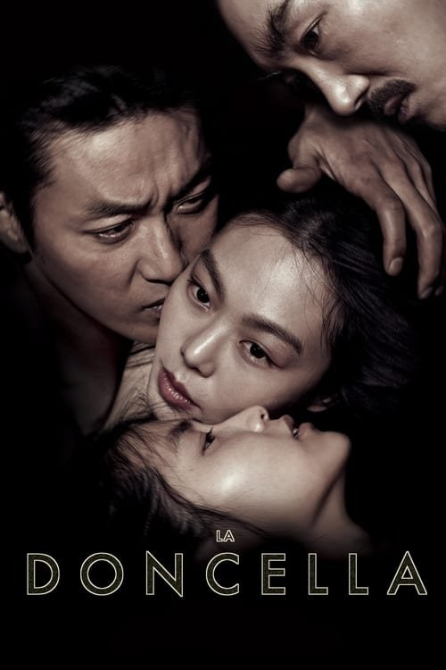

La doncella (2016)

Plataforma: Amazon Prime Video
Puntuación IMDb: 7.8/10
Duración: 2h 24m
Género: Thriller psicológico
Sinopsis Rápida
En la Corea ocupada por Japón, una joven doncella se infiltra en la vida de una rica heredera recluida, desencadenando una compleja trama de engaño, deseo y traición que te dejará sin aliento.
Sinopsis Detallada
{{SINOPSIS_EXTENDIDA}}
¿Por qué tenés que verla?
- Una trama magistral llena de giros inesperados que te mantendrán enganchado.
- La dirección de Park Chan-wook es impecable, creando una atmósfera opresiva y sensual a la vez.
- Su impactante representación de la opresión colonial y la complejidad de las relaciones humanas generó gran debate.
- Una película visualmente deslumbrante con una estética cuidada hasta el mínimo detalle.
Idea Extra
Análisis de la simbología visual en "La doncella": Un estudio de la puesta en escena, el vestuario y los objetos como potenciadores de la narrativa y la atmósfera.